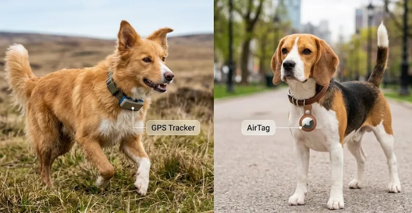

GPS vs AirTag para mascotas: ¿Cuál es realmente mejor?

Muchos dueños creen que un AirTag de 35€ hace lo mismo que un GPS de 100€. Spoiler: no es así. Dependiendo de dónde vivas, uno podría ser totalmente inútil.
Paso 1: Entiende la tecnología (Alcance)
El AirTag no tiene GPS; usa el Bluetooth de otros iPhones cercanos. Si tu perro se pierde en un bosque solo, no aparecerá. El GPS real (como Tractive) se conecta a satélites y funciona en cualquier lugar con cobertura móvil.
Paso 2: La precisión del rastreo
¿Quieres ver a tu perro moverse en tiempo real por el mapa? Necesitas un GPS. El AirTag solo te da "fotos fijas" de dónde estuvo la última vez que pasó alguien con un iPhone cerca. Para rastrear un animal en pánico y que no para de correr, el AirTag es muy limitado.
Paso 3: El factor coste y batería
Aquí gana el AirTag: la batería dura un año y no hay cuotas mensuales. Un localizador GPS debe cargarse cada pocos días y requiere una suscripción mensual (normalmente entre 5€ y 10€) para mantener la tarjeta SIM activa.
Nuestro veredicto TechMascotas
Usa un AirTag solo si vives en una ciudad muy densa y tu mascota no suele alejarse de ti. Pero si sales al campo, viajas o tienes un perro escapista, la suscripción de un GPS real es el precio de tu tranquilidad. ¡No escatimes en su seguridad!